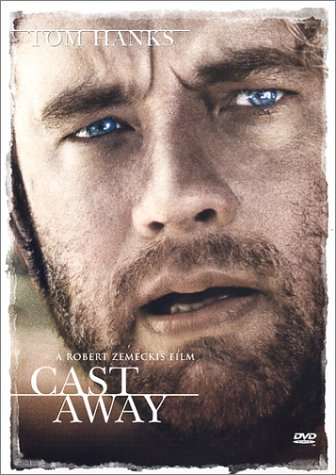
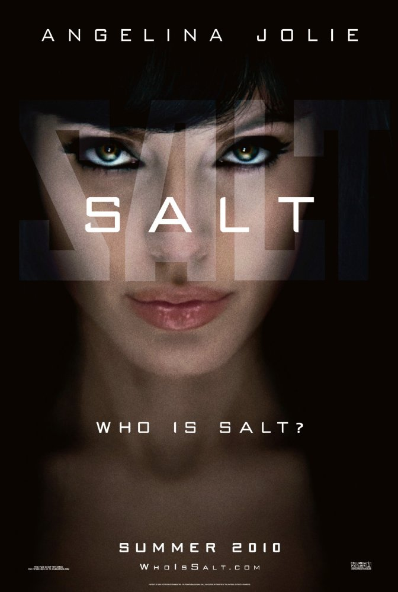

About Bibek Shrestha
Welcome to the Lab1 assignment.
|
I am a experienced Java developer with programming experience in various language. In July 2016, I just completed my on-campus study at MUM. And looking for full time Java Developer. I am ready to relocate anywhere within the USA. I always enjoy with hanging with my friends. I like to watch movies alot. Specially, I like action movies. I spend some time in a day for watching news also. I am a person who want to know about the current situation around us. I also want to read some local political news as well. |
|
My Courses at MUM
- CS472 - Web Applications Programming
- CS522 - BigData
- CS435 - Algorithm
- CS544 - Enterprise Architecture
- CS422 - Database System
- CS401 - Modern Programming Practice
- CS390 - Fundamental Programming Practice
Movies
I love to watch movies. Every weekend at least I watch one movie. Some of movies I liked are listed below:
 